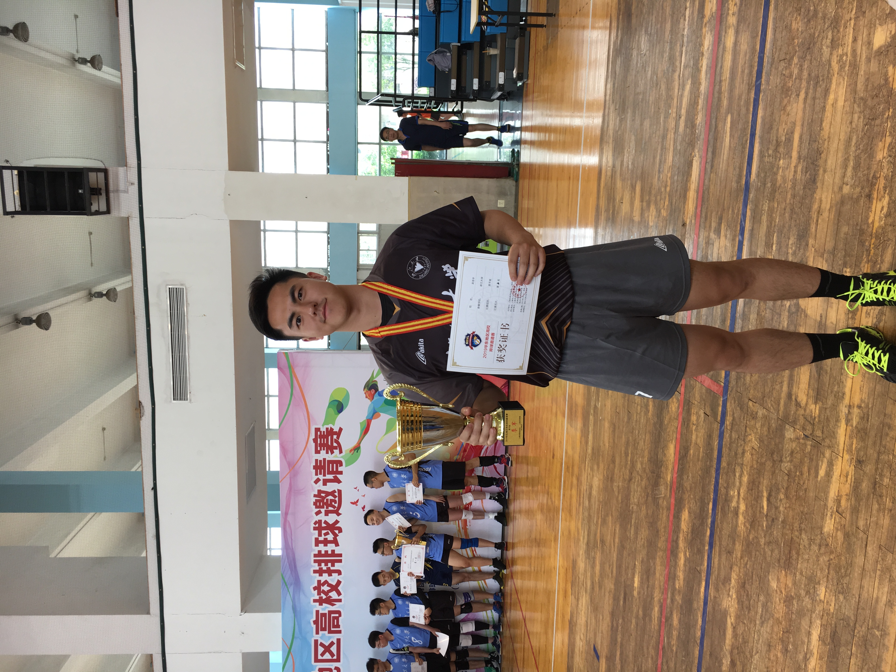
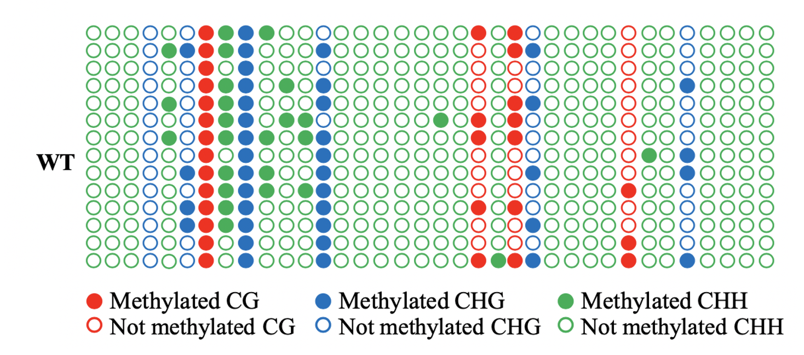
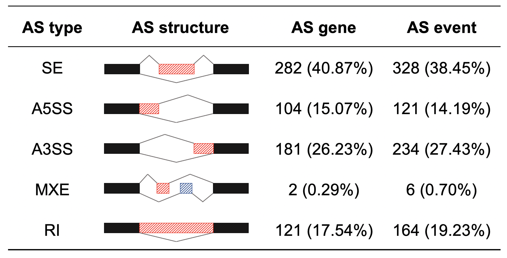

Haoyu Wu
I am a senior student at Chu Kochen Honors College, Zhejiang University, and I majored in applied biological science. I have been involved in researches of variouss background, including molecular biology, bioinformatics (omics and machine learning) and biosensor.
I was admitted to International Summer Internship Program (ISIP) at Princeton University this summer, which was unfortunately suspended due to the outbreak of COVID-19. I then took part in CIS summer research program under the instruction of Prof. Arthur Salomon from Brown Unversity, studying environmental toxins through mice metabolomics.
I am interested in combining computative methods and molecular biology to develop new tools for synthetic biology in the future. And I am applying for a Ph.D program this fall.
Education & Language & Others
GPA:3.85/4 87.1/100
TOEFL: 107 (R28+L29+S26+W24)
GRE: 323 (V155+Q168)
Hobbies: Volleyball, dragon boat, badminton, working out, opera...
Email: why1625@zju.edu.cn


Loss-of-function of RRM DME domain of OsROS1a causes sterility in rice
Instructor: Jianhong Xu

OsROS1a encodes 5-meC DNA glycosylase enzymes and regulates DNA methylation level in rice. We generated loss-of-function of OsROS1a mutants using the CRISPR/Cas9 system.The mutant had shrink spikelet and smaller anther which cause complete male sterility. We also found that the expression of genes involved in pollen and anther development was decreased in osros1a mutants as compared to wild-type. Furthermore, bisulfite sequencing showed that the CG and CHG methylation of the promoter region of these genes were significantly increased. Combined with previous studies, we suggested that RRM DME domain in OsROS1a is the function for OsROS1a causing sterility in rice.
Results have been submitted to Plant Molecular Biology (IF = 3.3, Co-first author)
Knock-in of ROS1a in rice induces genome-wide differential alternative splicing of pre-mRNA and affects grain size
Instructor: Jianhong Xu

In our study, we used CRISPR/Cas9 genome editing to generate various feasible, heterozygous ROS1a knock-in mutants in Oryza sativa Japonica group. We then performed RNA sequencing experiments on 15 DAP endosperms from line S1 and WT. rMATs was then used to identify both annotated and novel AS events in line S1 and the expression level of AS events was defined as “exon inclusion level”. The threshold was set to 0.0001 and AS events with Pvalue above 0.05 was filtered out for further analysis. As a result, five major types of AS events, including SE, A5SS, A3SS, MXE and RI were identified. In total, 863 differential AS events and 690 AS genes were identified. Among these AS events, 49.4% (426) of them were statistically considered to be present only in line S1 and 50.6% (437) only in WT.
Results are to been submitted to Genomics (IF = 6.2, Co-first author)
A method based on machine learning to predict the Invasiveness of insects
Instructor: Fei Li
Single copy homogolous protein were identify from 14 insect species (7 invasive species and 7 non-invasive specie), and then used as features for futher analysis. ReLief were adopted to extract the important features, and SVM were adopted for constructing the classifer. The classifer was cappable of distinguish invasive insects and non-invastive insects based on their genome with the accuracy of about 70%.
An OECT-based biosensor for VPA blood concentration detection
Instructor: Liquan Huang
We developed an electrochemical biosensor that integrates molecular biology, electrochemistry, engineering and computer science technologies. By dripping a drop of blood onto the chip and gently inserting it into the portable device we developed, VPA blood concentration can be measured easily and promptly, which provides useful guidance for administration. Along with the device, we have also designed a user-friendly Android app, enabling real-time update of testing results from the device as well as offering visualized statistical results.
Below is a link of a One-minute-rap of mine, introducing the project~
MiR529a controls plant height, tiller number, panicle architecture and grain size by regulating SPL target genes in rice (Oryza sativa L.)
Instructor: Jianhong Xu
Previous studies have shown that SPL (SQUAMOSA PROMOTER BINDING-LIKE) transcription factors can regulate rice tiller, panicle architecture and grain size, which were regulated by miR156, miR529 and miR535. In this study, we obtained miR529a target mimicry (miR529a-MIMIC) transgenic plants to investigate plant phenotypes, physiological and molecular characteristics together with miR529a overexpression (miR529a-OE) and wild type (WT) to explore the function of miR529a and its SPL target genes in rice. Our study suggested that miR529a can control rice growth and development by regulating different SPL target genes from seedling to mature stage, which could provide a new method to improve rice yield by regulating miR529a and its SPL target genes.
Results have been submitted to Plant Science (IF = 3.3, Third author)
Metabolomic analysis of potential multi-toxicity induced by 3,5,6-trichloro-2-pyridinol in orally exposed mice
Instructor: Arthur Salomon
3,5,6-trichloro-2-pyridinol (TCP) is the major metabolite of CPF both in environment and in biological system. Due to the fact that TCP possesses the hydroxyl, it is largely more soluble in water, and it has also been reported that TCP is more persistent in soil and have generally longer half-life in various condition. Because TCP lacks the phosphate moiety of CPF, it’s considered to have a low intrinsic toxicity, but it still includes multiple toxic effect, and have not been studied comprehensively from omics scale. In this study, 5 mg/kg/day, 50 mg/kg/day, and 150 mg/kg/day TCP were given to male mice through gavage for 28 days. Metabolomics profile were generated using NMR to measure the toxic effect of TCP. In total 51 significantly changed metabolites were identified, including phenylacetic acid, a carboxylic acid ester that had been reported to be connected to kidney disease and depression. In addition, function enrichment analysis showed that various forms of metabolism including amino acids and sugars were altered, potentially inducing dysfunction in animals.
Zhejiang Provincial Key Lab for Crop Science
Dec 2018 - Present
Advisor: Prof. Jianhong Xu
Responsibilities include:
· RNA-seq data analysis
· Experimental verification of DNA methylation's influence on seed characters
· Alternative splicing detection and analysis
Zhejiang University Key Laboratory for Biomedical Engineering of Ministry of Education
Sep 2019 - Present
Advisor: Dr. Bo Liang
Responsibilities include:
· Electrochemical signal processing and physical transduction
· OECT device design
International Summer Internship Program at Princeton University
June 2020 - August 2020
I was admitted to the ISIP program at Princeton University this summer. The program was unfortunately suspended due to the pandimic of COVID-19.
CIS Summer Research Program at Brown University
May 2020 - August 2020
Advisor: Prof. Arthur Salomon
Responsibilities include:
· Metabolomic analysis
· Identification of potential environment toxins
Zhejiang Provincial Key Laboratory for Biology of Plant Diseases and Insect Pests
June 2019 - June 2020
Advisor: Prof. Fei Li
Responsibilities include:
· Study the invasiveness of insects based on genome information and machine learning
Best 10 student in Zhejiang Unviersity (nominated)
Dec 2019
Top 50 students among all the 50,000 undergraduates and graduates per year, who have has been awarded for their outstanding academic achievement, student activity, and athletic performance.
Best 10 student in Agriculture Department (Ranked 1st)
Nov 2019

Top 10 students among all the 2,000 undergraduates and graduates in agriculture department per year, who have has been awarded for their outstanding academic achievement, student activity, and athletic performance.
Gold Medel in SensUs International Student Biosensor Competition
August 2020
The TruSense team, comprised of 15 students from diverse backgrounds, including engineering, agriculture, chemistry, economics and biomedical science etc. won the Gold Medal and Public Inspiration Award on SensUs 2020 held from August 26 to 28 online.
My keywords


Author's words
Thanks a lot for visiting, wish you a pleasant day!
Author
Haoyu Wu